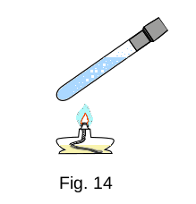

From the Heat phenomena
16. Internal energy
So, the quantity of heat transferred is equivalent to work, and therefore, along with work, it is a measure of energy change. But what kind of energy? After all, the transfer of a certain quantity of heat to the system or, conversely, the return of heat by the system does not directly change the mechanical energy of the system. If we heat water in a kettle, for example, the speed of the water's centre of gravity will not change. The potential energy of interaction water with external bodies will not change either. (If you ignore a slight increase in the water's centre of gravity due to thermal expansion.)
This allows us to make a conclusion - along with the mechanical energy the body has internal energy. And in the case when the center of gravity of a body is motionless (kinetic energy of movement a body as a whole is equal to zero) and when it does not interact with other bodies (potential energy a body is equal to zero), it still possesses energy.
From the point of view of the molecular-kinetic theory the internal energy of a body is average kinetic energy of chaotic movement of all molecules relative to the center of masses of a body plus average potential energy of interaction of all molecules with each other (but not with other bodies).
When the body heats up, we increase its internal energy. This means that the internal energy of the body depends on its temperature. In addition, it depends on the volume, because when the volume changes, the distance between the molecules of the body changes, and so does the potential energy of their interaction.
Just as the mechanical energy of a flying stone depends definitively from its speed and height above the ground, the internal energy in thermodynamics depends definitively from the magnitude of the thermodynamic values (system parameters) - \(T\) and \(V\). Since these parameters characterize the state of the system, we can say that the internal energy is determined by the state of the system.
 Part of the internal energy of the system can turn into mechanical energy. If you heat water in a tube closed by a plug (Fig. 14), the internal energy of the water will increase. After sufficient heat is transferred, the water will boil and the steam pressure will increase so much that the plug will be knocked out and fly up. The kinetic energy the plug is increased by the internal energy of water. Expanding, the water vapor performs the work and cools down. The internal energy of water decreases.
Conversely, when the mechanical energy in a closed system is reduced by frictional forces in the process of work, the bodies are heated at the same time. In this case, the reduction of mechanical energy is accompanied by an increase in internal energy.
In conclusion, it should be noted that internal energy includes energy related to the motion and interaction of particles in atoms and molecules, as well as the energy of electric and magnetic fields.